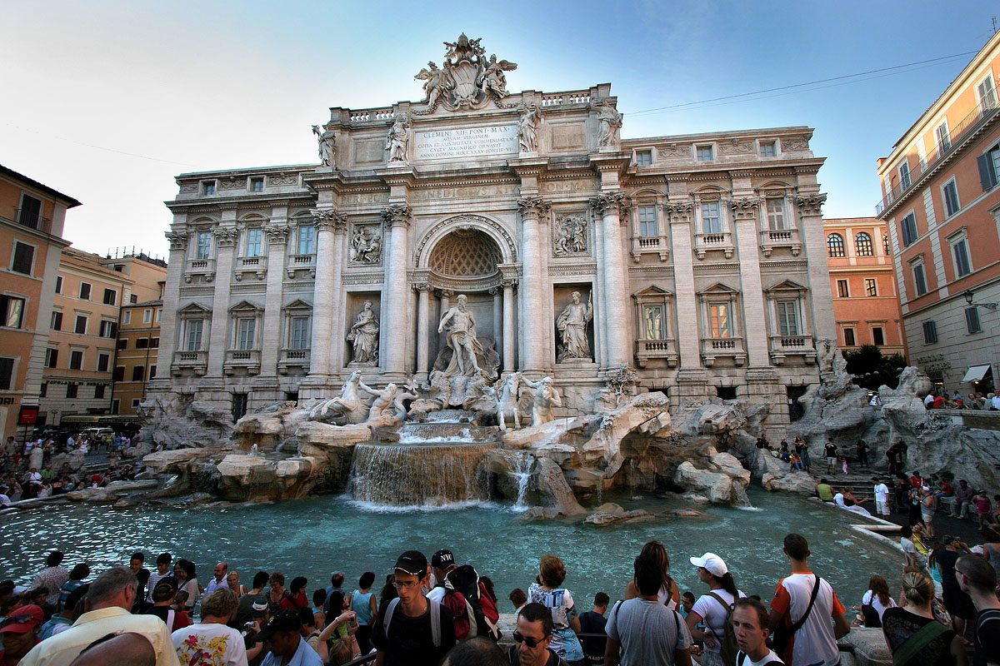
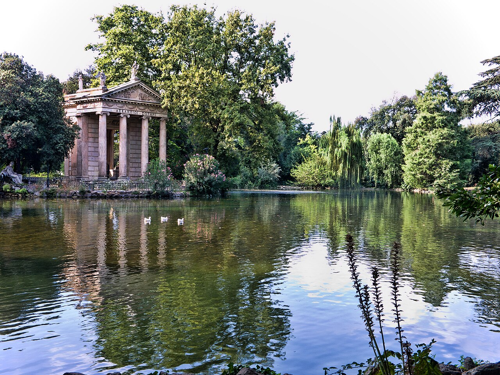

El Coliseo iluminado durante la noche.
Foto: Anil Öztas, Wikimedia Commons, CC BY 4.0.
El Coliseo, también conocido como Anfiteatro Flavio, fue construido en el siglo I d. C. y se utilizó para combates de gladiadores y
otros espectáculos públicos. Actualmente es uno de los monumentos más representativos de Roma y un símbolo del Imperio romano.
Ubicación: Piazza del Colosseo, en el centro histórico de Roma.
Conocer la arena donde se realizaban los espectáculos.
Visitar los sectores subterráneos, según el tipo de entrada.
Hacer visitas guiadas o utilizar una audioguía.
Aprender cómo se organizaban los combates y espectáculos romanos.
¿Por qué tenés que visitar el Coliseo?
Se recomienda visitar el Coliseo porque permite conocer de cerca la historia de la Antigua Roma y
admirar una de las construcciones más importantes del Imperio romano.
Fontana di Trevi

Fontana di Trevi.
Foto: Bodow, Wikimedia Commons, CC BY-SA 3.0.
La Fontana di Trevi es una de las fuentes más famosas de Roma y una destacada obra del estilo barroco. Fue diseñada por el arquitecto
Nicola Salvi y se caracteriza por sus grandes esculturas, formaciones rocosas y el movimiento del agua.
Arrojar una moneda siguiendo la tradición de regresar a Roma.
Recorrer las calles y monumentos del barrio de Trevi.
Conocer la historia de la fuente y del antiguo acueducto.
¿Por qué tenés que visitar la Fontana di Trevi?
Se recomienda visitar la Fontana di Trevi porque permite admirar una de las obras barrocas más importantes de Roma y
participar de la costumbre de arrojar una moneda para regresar a Roma, según la tradición.
Villa Borghese

El lago de Villa Borghese.
Foto: Jean-Christophe BENOIST, Wikimedia Commons, CC BY 3.0.
Villa Borghese es uno de los parques más importantes de Roma y se encuentra rodeado de jardines, árboles, fuentes,
esculturas y edificios históricos. Este amplio espacio combina naturaleza, arte y cultura en un entorno
tranquilo ubicado dentro de la ciudad.
Ubicación: Via di Porta Pinciana, en el centro de Roma.
Asistir a eventos o conciertos en Piazza di Siena.
¿Por qué tenés que visitar Villa Borghese?
Se recomienda visitar Villa Borghese porque ofrece un espacio tranquilo donde se puede disfrutar de la naturaleza y,
al mismo tiempo, conocer importantes obras de arte, museos y monumentos.